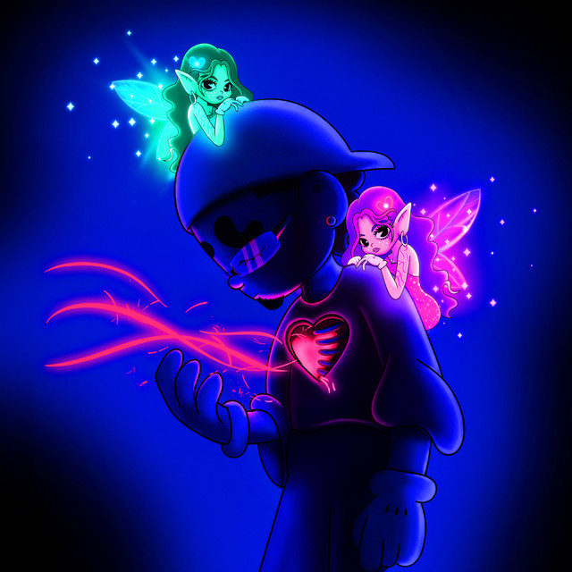

Artist profile
Omar Courtz
Omar Courtz is a talented musician known for his unique blend of genres and captivating performances. With a passion for music that transcends boundaries, Omar has been making waves in the music industry with his innovative sound and heartfelt lyrics.
Listen and explore
Albums
Choose a preview below
-

POR SI MAÑANA NO ESTOY Por Si Mañana No Estoy - PRIMERA MUSA Q U E V A S H A C E R H O Y ? ft. De La Rose